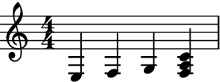
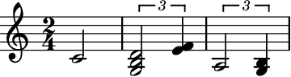
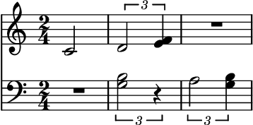
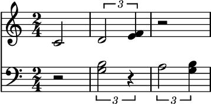
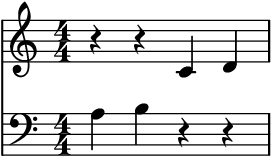
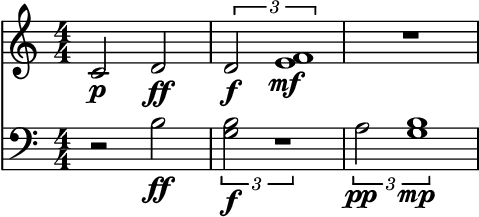

staff_splitter¶
- auxjad.staff_splitter(staff: Union[abjad.score.Staff, abjad.select.Selection], *, threshold: Union[int, float, str, abjad.pitch.pitches.Pitch] = NamedPitch("c'"), upper_clef: Union[abjad.indicators.Clef.Clef, str] = Clef('treble'), lower_clef: Union[abjad.indicators.Clef.Clef, str] = Clef('bass'), add_clefs: bool = True, dynamics_only_on_upper_staff: bool = False, reposition_dynamics: bool = True, reposition_slurs: bool = True, use_multimeasure_rests: bool = True, rewrite_meter: bool = True) → tuple[source]¶
Takes an
abjad.Stafforabjad.Selectionand splits it into two staves using a reference pitch as threshold. Returns a tuple ofabjad.Staff’s.- Basic usage:
By default, this function splits notes using
C4as the pitch threshold (any pitches equal to or higher than the threhold will be added to the upper staff, and any pitches lower than it will be added to the lower staff). It also automatically adds clefs to both staves. This function returns a tuple of twoabjad.Staff’s, which can be input directly into anabjad.Score:>>> staff = abjad.Staff(r"a4 b4 c'4 d'4") >>> abjad.show(staff)

>>> staves = auxjad.staff_splitter(staff) >>> score = abjad.Score(staves) >>> abjad.show(score)
- Chords:
Chords are split according to the threhold pitch:
>>> staff = abjad.Staff(r"<g b>4 <a c'>4 <b d' f'>4 <a f c' e' g'>4") >>> abjad.show(staff)

>>> staves = auxjad.staff_splitter(staff) >>> score = abjad.Score(staves) >>> abjad.show(score)
threshold:Set the keword argument
thresholdto a pitch to specify the threhold pitch. Notes lower than this pitch will be added to the lower staff whereas notes higher than or equal to this pitch will be added to the upper one. It can take anabjad.NamedPitch, anabjad.NumberedPitch, or astr,int, orfloat.>>> staff = abjad.Staff(r"c'4 d'4 e'4 <d' f' a'>4") >>> abjad.show(staff)

>>> staves = auxjad.staff_splitter(staff, threshold="e'") >>> score = abjad.Score(staves) >>> abjad.show(score)
lower_clefandupper_clef:By default, the clefs of the lower and upper staves are set to bass and treble clefs, respectively. Use the keyword arguments
lower_clefandupper_clefto change this. They can take either anabjad.Clefor anstr.>>> staff = abjad.Staff(r"c'4 d'4 e'4 <d' f' a'>4") >>> abjad.show(staff)

>>> staves = auxjad.staff_splitter(staff, ... threshold="e'", ... lower_clef='treble', ... ) >>> score = abjad.Score(staves) >>> abjad.show(score)
>>> staff = abjad.Staff(r"e4 f4 g4 <f a c'>4") >>> abjad.show(staff)
>>> staves = auxjad.staff_splitter(staff, ... threshold='g', ... upper_clef='bass', ... ) >>> score = abjad.Score(staves) >>> abjad.show(score)
add_clefs:To not add clefs to the output staves, set
add_clefstoFalse:>>> staff = abjad.Staff(r"c'4 d'4 e'4 <d' f' a'>4") >>> abjad.show(staff)
>>> staves = auxjad.staff_splitter(staff, ... threshold="e'", ... add_clefs=False, ... ) >>> score = abjad.Score(staves) >>> abjad.show(score)

Note
Note how there are no clefs added to the LilyPond output. Note that in the image above that LilyPond automatically fallbacks to treble clefs when no clef is present in the input code.
>>> staff = abjad.Staff(r"c'4 d'4 e'4 <d' f' a'>4") >>> staves = auxjad.staff_splitter(staff, ... threshold="e'", ... add_clefs=False, ... ) >>> string = abjad.lilypond(score) >>> print(string) \new Score << \new Staff { r2 e'4 <f' a'>4 } \new Staff { c'4 d'4 r4 d'4 } >>
use_multimeasure_rests:By default, rests are converted to multi-measure rests.
>>> staff = abjad.Staff( ... r"\time 2/4 c'2 \times 2/3 {<g b d'>2 <e' f'>4}" ... r"\times 2/3 {a2 <g b>4}" ... ) >>> abjad.show(staff)
>>> staves = auxjad.staff_splitter(staff) >>> score = abjad.Score(staves) >>> abjad.show(score)
Set
use_multimeasure_reststoFalseto disable this behaviour.>>> staves = auxjad.staff_splitter(staff, ... use_multimeasure_rests=False, ... ) >>> score = abjad.Score(staves) >>> abjad.show(score)
rewrite_meter:By default, the
abjad.Meter.rewrite_meter()mutation is applied to the output. Setrewrite_metertoFalseto disable it:>>> staff = abjad.Staff(r"a4 b4 c'4 d'4") >>> abjad.show(staff)

>>> staves = auxjad.staff_splitter(staff, ... rewrite_meter=False, ... ) >>> score = abjad.Score(staves) >>> abjad.show(score)
reposition_dynamics:By default, dynamics are split among the staves and then are mutated using
auxjad.mutate.reposition_dynamics().>>> staff = abjad.Staff( ... r"c'2\p <b d'>2\ff \times 2/3 {<g b d'>2\f <e' f'>1\mf}" ... r"\times 2/3 {a2\pp <g b>1\mp}" ... ) >>> abjad.show(staff)

>>> staves = auxjad.staff_splitter(staff) >>> score = abjad.Score(staves) >>> abjad.show(score)
Set
reposition_dynamicstoFalseto disable this behaviour:>>> staff = abjad.Staff( ... r"c'2\p <b d'>2\ff \times 2/3 {<g b d'>2\f <e' f'>1\mf}" ... r"\times 2/3 {a2\pp <g b>1\mp}" ... ) >>> staves = auxjad.staff_splitter(staff, ... reposition_dynamics=False, ... ) >>> score = abjad.Score(staves) >>> abjad.show(score)
Note
It is important to note that dynamics can easily become problematic in the output when dealing with complex input staves. When possible, it is always best to handle containers without dynamics or those with very simple dynamics.
dynamics_only_on_upper_staff:Dynamics are distributed to both staves by default. To keep the dynamics only to the upper staff, set
dynamics_only_on_upper_stafftoTrue>>> staff = abjad.Staff( ... r"c'2\p <b d'>2\ff \times 2/3 {<g b d'>2\f <e' f'>1\mf}" ... r"\times 2/3 {a2\pp <g b>1\mp}" ... ) >>> abjad.show(staff)
>>> staves = auxjad.staff_splitter(staff, ... dynamics_only_on_upper_staff=True, ... ) >>> score = abjad.Score(staves) >>> abjad.show(score)
Note
Similarly to the previous note about dynamics, it is important to note that, once again, dynamics can easily become problematic in the output. If there are rests or multi-measure rests in the upper staff, the dynamics can get lost. The best approach is to add them after the split.
- Slurs and articulations:
This function will automatically handle slurs and articulations:
>>> staff = abjad.Staff( ... r"\time 2/4 a8( b c' d') \times 2/3 {<g b d'>2 <e' f'>4}" ... r"\time 3/4 <d a c' g'>4-- r8 <f a bf>4." ... ) >>> abjad.show(staff)
>>> staves = auxjad.staff_splitter(staff) >>> score = abjad.Score(staves) >>> abjad.show(score)